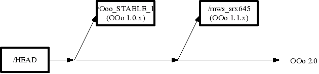
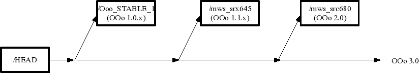
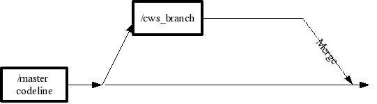
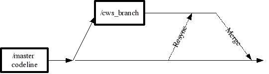

OpenOffice.org source control
OpenOffice.org main codelines
OpenOffice.org does use the cvs Source Control System. The major releases of OpenOffice.org are implemented on, so called, cvs branches. The development of the next major releases is developed on HEAD of the cvs tree, the maintenance of older versions also happens on branches.

In
the OpenOffice.org environment these branches are often called
codelines or master(-branches). Builds on these codelines does not
happen continuously (daily builds) but within regular milestones. For
the 1.1.x codeline this result in a cvs branch tag called mws_srx645
which represents the latest status of this codeline and several more
tags which represent a specific milestone on this codeline
(SRX645_m34, SRX645_m40). The same scheme applies to the 2.0 codeline
(mws_src680 for the latest status, SRC680_m36 for a specific
milestone). Usually every week there will be a new milestone on the
active development line available. There is also the possibility to
achieve some more granularity with the introduction of steps, so that
more than one build per week is possible (SRC680_m33s1).
The names like SRC680, SRX645 will be deprecated in the future, they represent the old scheme of milestone naming.
As soon as the OOo 2.0 comes close to release, a new branch for this codeline will be created so that concurrent development of the next release can be started.

Development branches
Since OpenOffice.org build times are pretty high and the goal is to have at all times a milestone available which is in release quality, no commits to the master codeline are made. OpenOffice.org is developed by more than 100 developers, it builds for more than 10 platforms, for more than 25 languages and it has more than 7 million lines of code with a plenty of build time needed for a complete recompile. So the risk of breaking something is pretty high, even if the comitters is sure about his changes. Due to this complexity we introduced the concept of doing any feature development and bug fixes on cvs branches. This means that a new feature has to be developed on a cvs branch, until the feature is complete and has been tested on at least to major platforms (usually one Unix derivate and Windows). The same applies for bugs fixes, but bug fixes should be grouped together on one branch.

These
branches are called within the OpenOffice.org environment child
workspaces. Since it is possible to create many child workspaces
in parallel, some additional processes has been developed to make
life more easy and secure on these child workspaces. For example, the
problem of “repeated merges” is quite common in cvs. This
situation occurs quite often when dealing with many branches in
parallel, for example if a bug fix has been applied to more than one branch.
Child workspace resynchronization
Many of the “repeated merge” problems can be solved before the merge back to the master branch if you were able to bring your copy of the cvs branch up to date of the latest know stable version of your master. For this the resynchronization action (cwsresync) command has been introduced.

The
resync mechanism is able to deal with repeated operation, so that
this process can be executed frequently. In case a conflict has to be
resolved, this will happen in the child workspace, so the risk of
having a broken master workspace is less than in the classical
approach, when a branch will be merged back to the master with the
usual 'cvs update' command.
Child workspace reintegration
When all the changes being made on a child workspace are joined back, the log history of the branch will be saved and stored in the log history of the trunk as well. Otherwise the tracking of what had happened on a branch is difficult.
Since the reintegration is always done by a unique entity (usually Release Engineering associated with this codeline) we loose the ability to see the original author of a single line with the 'cvs annotate' command, but we still are able to see when a line of code has been changed and can use the log for getting more details.
revision 1.38
date: 2004/04/02 13:49:24; author: rt; state: Exp; lines: +9 -1
INTEGRATION: CWS sj05 (1.34.80); FILE MERGED
2004/03/15 13:47:50 sj 1.34.80.4: RESYNC: (1.36-1.37); FILE MERGED
2004/02/13 17:38:38 sj 1.34.80.3: RESYNC: (1.34-1.36); FILE MERGED
2004/02/09 15:01:36 cl 1.34.80.2: #i20484# added new CustomShape ui
2004/02/04 11:39:15 cl 1.34.80.1: #i20484# added new CustomShape ui
----------------------------
revision 1.37
date: 2004/02/25 15:55:41; author: kz; state: Exp; lines: +0 -10
INTEGRATION: CWS layoutmanager (1.34.20); FILE MERGED
2004/02/19 16:33:04 cd 1.34.20.3: RESYNC: (1.35-1.36); FILE MERGED
2004/01/29 16:56:22 cd 1.34.20.2: RESYNC: (1.34-1.35); FILE MERGED
2003/11/24 07:25:16 cd 1.34.20.1: #111899# Remove old menu controller registration
----------------------------
revision 1.36
date: 2004/02/03 16:35:11; author: hr; state: Exp; lines: +17 -12
INTEGRATION: CWS dialogdiet (1.34.60); FILE MERGED
2004/01/26 14:32:05 mba 1.34.60.3: #i22972#: SvxErrorHandler needs to be created by apps
2004/01/19 23:47:01 mba 1.34.60.2: RESYNC: (1.34-1.35); FILE MERGED
2003/11/28 18:08:12 mba 1.34.60.1: #i22972#: offmgr removed
Environment Information System (EIS)
There is a web frontend to view a list of child workspaces and their status ( http://eis.services.openoffice.org/EIS2/servlet/GuestLogon). The status of a child workspace and the corresponding master workspace can be viewed.